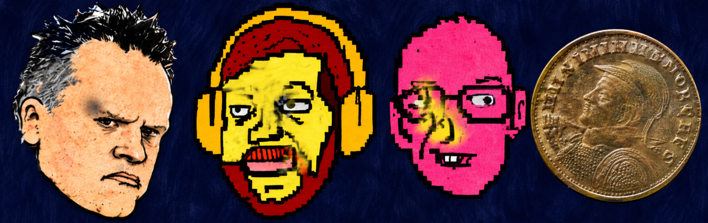

Decoding the Honest Shoe Folk
Audio streamed from Podbean

THE HONEST SHOE FOLK AND THE PROLETARIAN END OF DAYS
In which The Fall discover folk music inside a shoe, declare war on Thatcherism by way of a Latin dance, encounter Frank Sidebottom, and find that the apocalypse is being administered by a credit card company.
There is a persistent misconception that The Fall were an experimental rock group. This is only partially true. They were also a folk ensemble, a provincial theatre company, a malfunctioning political broadcast, a garage band, a collection of disgruntled employees and, on certain particularly unfortunate afternoons, a man shouting at a keyboard demonstration tape. Across eight recordings, the supposedly linear history of a post-punk institution dissolves into a more interesting proposition: the avant-garde as a form of northern municipal entertainment, conducted with all the elegance of a fight outside a working men's club.
I. FRANK SIDEBOTTOM AND THE WORKING-CLASS AVANT-GARDE
Frank Sidebottom presents a problem for conventional accounts of artistic sophistication. A man wearing an enormous papier-mâché head, singing about domestic trivia and occasionally sounding as though he has composed his arrangements during a power cut ought not to occupy the same critical territory as Captain Beefheart, Can or Mark E. Smith. Yet he does. Chris Sievey's north-western independent-music ecology intersected with The Fall's: Mark Riley's record-label connections, the Beatles-related charity performance, and Frank's interpretations of “Hit the North” and “How I Wrote ‘Elastic Man’” make the relationship more than an imaginative coincidence.
Both Frank and Smith understood the power of presenting absurd material with absolute conviction. Frank's miniature universe of puppets, television, cheap keyboards and local celebrities was not simply a joke about a man with a large head. It was an alternative reality in which the ordinary became inexplicably fascinating. Smith performed a related operation upon provincial English life, exaggerating its locations, grievances and eccentrics without quite abandoning their recognisable humanity. The Bonzo Dog Doo-Dah Band suggests a lineage of musical absurdism; Beefheart suggests an appetite for dismantling existing songs and returning them in a condition likely to upset their original owners. Dada might claim some credit, although Dada would probably object to the bus fare.
II. BLOB 59 AND THE PROLETARIAN SHOE
“W.M.C. – Blob 59”, from Grotesque (After the Gramme), seems to have been produced in opposition to the recording industry. The spoken fragment and its bizarre brass-band or Salvation Army afterlife refuse the usual distinction between music and the conditions in which music happens. A cheap plastic Beatles guitar, allegedly used by Smith to work out early musical ideas, is a more fitting emblem for this miniature than the expensive instruments of progressive rock. Here the alleged architect of post-punk modernism appears to be strumming a child's Christmas present in a draughty back room.
The crucial linguistic disturbance is the working class reaching for posterity rather than prosperity. The former promises historical significance; the latter promises money, security and somewhere less damp to live. To confuse the two is either a mistake or an entire theory of the British labour movement. The proletariat is promised material improvement and discovers it has instead been entered into an immortality competition. The question of Blob 59's responsibility for his own mysterious circumstances remains unresolved, like an especially unpleasant item on a committee agenda.
The recording sounds as though it has been made inside a shoe: not metaphorically but acoustically, with the muffled resonance of a damp brogue and the brass band apparently playing somewhere near the toe. Pierre Schaeffer had railway engines and laboratories; Smith had a plastic guitar, a provincial hall and a suspiciously distant hymn. Call it folk concrète: musique concrète deprived of its Parisian grant funding.
III. MARQUIS CHA-CHA AND THE FALKLANDS DISCO
“Marquis Cha-Cha”, from Room to Live, converts political anxiety into a grotesque dance. Galloping bass, agitated percussion, squealing guitar, whistling and a Latin-inflected rhythmic spring create something between military urgency and a particularly disreputable holiday-resort cabaret. The bass drives rather than decorates; the drums threaten to escape the arrangement; the whistling behaves like a music-hall comedian who has wandered into an international incident.
Its 1982 context makes the Falklands War and Thatcherite nationalism difficult to ignore. The narrator can be heard as a propagandist or exiled broadcaster, with Lord Haw-Haw providing a suggestive historical analogy rather than a literal key. The recurring impossibility of going home might indicate military defeat, betrayal or the collapse of a stable national identity. Even Mark Thatcher becomes a speculative candidate for the title's dancing aristocrat: Marky Cha-Cha, an absurdity so entirely plausible in Smith's associative universe that it is important not to mistake plausibility for proof.
The song also flirts with the dance-oriented ambitions of contemporary post-punk. The revolutionary avant-garde discovers a usable bassline and, before anyone can intervene, starts wearing shorts. But “Marquis Cha-Cha” is too abrasive, too theatrically unstable, to become mere fashionable funk. Brecht might have approved, though he would have demanded a clearer account of the means of production. Where “Blob 59” preserves the sound of disorder, “Marquis Cha-Cha” turns disorder into propulsion.
IV. WHITE LIGHTNING AND THE EIGHT-BIT INSULT MACHINE
“White Lightning” exposes a difficulty in The Fall's cover-version practice. Their finest appropriations make the originals sound as though they have been forcibly relocated: “Mr. Pharmacist” and “Victoria” become Fall records rather than affectionate reproductions. The George Jones-associated rockabilly number, written by J. P. Richardson, is lively and enjoyable, with chugging guitar, honky-tonk piano and Smith apparently enjoying himself. But it is suspiciously faithful. The band has entered an American roadhouse and, unusually, has not broken much furniture.
The surrounding folklore wanders into a wonderfully deranged project of performing songs The Fall had covered rather than covering The Fall themselves, and thence to an actor associated with The Human Centipede 2. The conceptual route from George Jones to one of the nastier modern horror franchises is not immediately apparent. That is why it deserves to be preserved.
“Crew Filth” is the less respectable proposition: primitive electronic figures resembling an eight-bit Nintendo or Zelda soundtrack, warped quasi-exotic sounds, abrupt shifts in recording quality and a torrent of interpersonal abuse. The relationship with “Insult Song” and later spoken harassment is unmistakable, but the obscenities can sound adolescent rather than transgressive. There is a difference between a studio experiment and somebody pressing the demonstration button on a keyboard. The Fall's mythology sometimes makes the latter seem like the former. A competent cover faces an incompetent experiment; neither category is automatically a compliment.
V. FIFTEEN WAYS TO LEAVE YOUR INTEREST BEHIND
“15 Ways” belongs to that curious subset of Fall recordings which are almost indistinguishable from ordinary early-nineties indie rock. Its title invites Paul Simon's “50 Ways to Leave Your Lover”, while the lyric suggests the reductive machinery of music journalism, the transformation of unruly artistic lives into numbered explanations. Yet the musical setting is brighter and more conventional than its possible target deserves.
The two-drummer arrangement ought to provide opportunities for rhythmic disagreement. Karl Burns and Simon Wolstencroft could generate exhilarating collective instability; two drummers performing essentially the same part, however, may amount to an expensive method of employing one drummer. Burns's gradual return to the live group, accumulating pieces of percussion equipment until he had effectively reconstructed himself as a second drummer, is a perfect Fall anecdote: re-employment through incremental acquisition of hardware.
Even the whistling seems inferior to that of “Marquis Cha-Cha”, a trivial complaint only if one has never understood how much of The Fall's greatness resides in such details. The track is not offensive. It is something worse: mildly pleasant. The group could write pop songs, but the interesting question was whether they could write pop songs that other groups could not have written.
VI. RAINMASTER AND THE GEOGRAPHY OF MEANINGLESSNESS
“Rainmaster”, from Cerebral Caustic, offers a correction in the form of garage-rock ugliness. The arrangement builds through a deliberate sequence of entrances before settling into the grubby, unstable territory of the sixties Pebbles compilations. The Country Teasers offer a useful comparison: garage rock not as a nostalgic reconstruction of 1966 but as a contemporary vocabulary of distortion, discomfort and wilful crudity.
The lyric is a geographical weather report written by somebody undergoing a minor theological crisis. Belgium, Basingstoke, New York and cool green forests appear in the same unstable mental atlas; hammers, envelopes and benedictions drift through it without the courtesy of explaining themselves. Breton's surrealists preferred their irrational juxtapositions to possess a certain revolutionary glamour. Smith preferred Basingstoke.
The vocal makes this landscape sound authoritative through rhythm and insistence rather than narrative coherence. The words promise an underlying story while refusing to provide it: the sensation of overhearing a meaningful conversation from another room, in a language one almost understands. The mix can sound thin, the squeaks irritating and the construction underdeveloped, yet its imaginative weather system is far more compelling than the agreeable ordinariness of “15 Ways”. Rain, despite its uncertain administrative responsibilities, prevails.
VII. MONOCARD AND THE TECHNOLOGICAL APOCALYPSE
By Ersatz G.B., The Fall had survived punk, post-punk, New Wave, Madchester, Britpop and the collapse of the record industry. “Monocard” sounds like these accumulated historical pressures taking physical form. Its vast, grinding opening delays Smith's arrival while a formidable rhythm section establishes a slow, ominous landscape. Black Sabbath, doom metal and psychedelic repetition are useful reference points, but the electronic interference introduces something less stable than orthodox heavy rock: an industrial installation gradually becoming conscious.
Nigel Kneale's science-fiction dramas repeatedly imagined modern technology as a conduit for ancient or malevolent forces. “Monocard” inhabits a similarly claustrophobic universe. The universal card or chip promises convenience while threatening to absorb every aspect of human life into a single administrative mechanism. The future will be efficient. Everything will be recorded. Nobody will understand anything.
There is a possible medical resonance in the references to benefit, peril and medication, particularly given the increasingly bodily fragility audible in Smith's later voice. Such associations remain speculative; their force lies in the juxtaposition of bureaucratic control with physical vulnerability. Smith sounds like a prophet denied admission to his own apocalypse because his card has expired.
And then there is “Versace apprentice”: a magnificent image of technological nightmare turned lifestyle opportunity. Walter Benjamin wrote of the aestheticisation of politics; here is the Versace-isation of the end of civilisation. The machine has been designed for everybody. Nobody has been consulted. The music is technically formidable yet still sufficiently strange to resist the bland category of professionalism.
VIII. O! ZZTRRK MAN AND THE DINOSAUR IN THE SHOE
“O! Zztrrk Man”, from New Facts Emerge, initially resembles a Dinosaur Jr. imitation which Mark E. Smith has arrived to ruin. On repeated hearing, the proposition reverses: a Dinosaur Jr. imitation which he has arrived to improve. The guitars suggest J Mascis's distorted, melancholy vocabulary, with traces of Sebadoh and the Wedding Present; a bulbous organ floats over the garage-rock churn. The band is almost alarmingly capable of producing a conventional American-style indie song.
Smith, however, sounds as though he has submitted his vocal on a cassette discovered beneath the passenger seat of a car. The collision between melodic accessibility and vocal sabotage is the point. A bizarre speculation about the title involving the golfer George Best does nothing to stabilise its meaning. It seems to signify something with extraordinary urgency while declining to say what.
The low-fidelity shoe of “Blob 59” has returned after nearly four decades. Not because The Fall failed to progress, but because their identity depended on the possibility of deliberately undoing progress. One late-period song takes doom metal and turns it into an administrative nightmare; another takes American indie rock and forces its singer to perform through a defective household object. Neither sounds conventionally Fall-like. Both are unmistakably The Fall.
IX. THE FUTURE IS A WORKING MEN'S CLUB
The continuity between “W.M.C. – Blob 59” and “O! Zztrrk Man” is not a straightforward journey from primitive beginnings to professional accomplishment. It is a continuous negotiation between competence and disruption, between the possibilities of recording technology and the pleasures of making recordings sound as though recording technology had never been invented.
Frank Sidebottom belongs to this history as surely as Can or Beefheart. So do working men's clubs, Salvation Army bands, plastic guitars, Pebbles compilations, video games, provincial weather reports and the prospect of becoming a Versace apprentice. The Fall's imagination was encyclopaedic, but the encyclopaedia had been assembled by somebody who had lost the index.
These records invite explanation while ensuring that no explanation can quite accommodate them. “Blob 59” offers proletarian folk mythology; “Marquis Cha-Cha” turns propaganda into a deranged dance; “Crew Filth” reduces experiment to a malfunctioning Nintendo; “Rainmaster” makes Basingstoke a site of surrealist revelation; “Monocard” imagines the apocalypse as an inconvenient administrative reform. Ordinary cultural material is extracted from its surroundings, distorted and returned in a form both recognisable and profoundly wrong.
The Fall did not simply make strange music. They made the ordinary world sound as though it had been recorded inside a shoe. And after forty years, the shoe still fits.
Episode 16 — Transcript
Whisper working transcription. All passages have named speaker labels estimated from conversational context; these are not voice-verified and some labels and words will be wrong. The recording contains music and cross-talk, and the passages group neighbouring short Whisper segments for readability.
Let's go home with it.
Hopefully, the car gets to all the rives soon. Welcome to the Fallout Podcast Episode 16, aka Proletarian Visions of Posterity.
It's a fall clash of titans, all 525 songs going head to head. We now have confirmed that's how many there are, for a conclusive conqueror gunfight chopped into four epochs, 77 to 85, 86 to 93, 94 to 2001. To then to 2017, that seems like a long time, doesn't it?
But you know, with us tonight, we have to miss Pippington B at the Ace of Wands. How is your wand, Pip? It's incredibly warm. Probably the warmest it's been for some time. That's good to know. It does droop and peek on its own whim.
It's all of the Devil's fire now. And Lord Sage Temple, him of the Cups. How are the temples? Oh, the temples are throbbing. The Pemerton Walker. Are the hills still wet?
Oh, yes, very much so. And Invisible Peel, Rest in Peace. And me, the host. Drink from my chalice, please. Here's a question for you. It's a trivia, rather than your opinion.
See if any of you get it. So we're going to talk about WMC Blob at length tonight. That's off grotesque, which is the first, like, skit or whatever you want to call it. But what was the first cover to appear on a fall LP?
I'll give you a clue. It's later than you think. Victoria. Oh, that's a good guess. It's just before Victoria. It's a big one. It's one big.
Mr. Pharmacist. Yes, well done. Oh, yeah. Is that the first one? All right, okay. Did they do it live though?
Early on, I know they did Louis Louis. Other than that, I don't know. But then after that, the flood gates opened, right? So you got Victoria on the next album.
And then from that point on, there was on many albums, two or three.
So first up, we've got a segment that we're going to call futures and pasts, probably. And last time round, we looked at Beefheart. But today, Alastair, interest in Aspenhall has brought his fall influence or influenced to the table. Who have you brought, Al?
Mr. Francis Sidebottom. All right, let's have a listen to the three tracks.
So this next one.
Well, I'll go in a little bit of a right placement. There's parts on that. They just get into like day in the life with the puppets doing the backing vocals. Lots of, whoo, ah, kind of with the siren going on in the background.
Well, it's like breaking down the song and then bringing it back into a nice little quiet bit. There's some really good technical writing on that with some very funny lyrics about asking the time from a right policeman and getting swatted in the head. It's Satire, isn't it, Al? Satire.
Yeah, it's that kind of thing. So why did you bring it? Why is Frank, what's the connection with the fall? The main connection, I think, if it was the talking person, L.Y. is a bit Mark Riley.
He played with his backing band, the Oblimey Big Band. He was either Billy or Barry Bailey on the radio shows. He put Frank's stuff on the inter-records as well, which was Riley's label. Both Frank and the fall from the Sargeant Peppa knew my father, Beatles, children in need thing.
He got covers as well, but Frank did hit the Northlands, how about a rote elastic, man? So there's a bit of a connection, though. This is the regional connection as well, where the both films are like Manchester, he kind of were. And the kind of eras, well, they were grown up around the same time, similar kind of backgrounds,
you know, just it's grown up north. So there's definitely links there between Frank and the fall. Spencer, good evening. How are you doing?
Good afternoon, yeah. Thanks for inviting me. Apologies for the little agency, but Alice will tell you that comes with my character. No problem.
So Al, what's your what's going on next? All right, we're going for a cover and it's the way you could just like take a song and completely deconstruct it, put it into his own little bloody world. And it was his own world.
And it was mashing up to beef art songs here. It's just like, yeah, get in, brilliant. There's probably some banjo on it as well.
I think the best beef art cover ever is. It's hard to cover beef art and give it its stamp. And obviously he covered Hit the North and he did a bang up job of that. And he also had to go how I wrote Elastic Man at some point.
Ezra, what's your take on Frank's side bottom? Is he is he connected to the fall in your mind? It doesn't surprise me that, you know, it seems like a natural connection growing up, you know, like I would see Frank on all kinds of TV shows.
And I don't think the utterly overwhelming bizarreness of who he was or what he was doing really hit home because I was at the kind of young age where you just accept the stuff you see and you don't really think about it. And so, yeah, I always remembered kind of finding him amusing and whatever, but not really thinking about it that much.
And then he dropped off the radar. Then the next thing I saw was that there was this film that was done about it, which I watched and was pretty offended by, especially as Mark Ronson, who played keyboards in his band, was the screenwriter for it.
But it was basically kind of conflating the career of Captain Beefa and Frank Sidebottom. And I'm like, you've got two incredibly interesting artists here who both of either of whom would arguably merit a feature film. So why the fuck are you just smashing them both together and pissing over both their kind of careers?
You really upset me that film. It was amazing. Yeah, it was. But yeah, you know, the stuff that I've been listening to this week is top notch, top banana, especially Hei Yu Riot policeman, which I think is rapidly becoming one of my favorite pieces of political music.
The Hei thing is a false staple as well, right? Definitely. My love for Frank goes way back way before I even knew the fall. But in my mind, there's a lot of strong connections. Shall we hear the third one?
This one's Ur-Play, right, Al? Yeah, this one. You've got to listen to the lyrics because he's explaining exactly what he's doing in the song whilst he's doing it.
It's been halfway through.
I'm playing my song again. It fetches his slump. Airplane. There's nothing wrong with catchy little hooks.
You hate but just can't seem to shake the going round your head right now. There's nothing you can do to stop yourself from leaching on the bridge and singing. Airplane. I'm playing my song again.
I'm hating for the walk. Airplane. Taking away.
Well, that's very, that is very fresh. What I think it shows is his, like Smith, his instinct for decisions about making pop music. Now, obviously he was a very good musician as well, but a lot of his lyrics and the way he presented himself was very instinctive, very similar to Smithy in a lot of ways.
Spencer and Phil, what is your take on Frank and maybe connections to the fall? Well, I agree with Alistair. There is the link with Mark Riley to InSafe and I missed the introduction, so I don't know whether it was linked back to the Ong magazine that he was both heavily involved in the both Mark and Frank sort of role.
In terms of the link creatively, I think you write as an intuitive feeling for what's naturally good, however it's presented as raw as it might be, or as polished as it might be. And I've always thought that there was a lot of symbiont between the two, but two very different markets. And for me, Frank's always like the missing link between the fall and the bombsore
do that a band because he absorbs that reality and presents it right back to, but in a very working class way, very naturally. I've always enjoyed Frank's stuff, but I am acutely aware he's a bit of an acquired but yeah, fantastic man and a sad love.
And if you are a fall fan who doesn't like Frank's side bottom, you're probably not with us anymore because we're about 10 minutes into this three minute Frank clip. We, there's a lot of love for Frank. We're going a bit long on this segment, but you know, it's our podcast. We do whatever the bloody hell we want.
Phil, what's your take? Exactly. What's your take, Phil? So yeah, I bet that is you. I've got to use a word of Frank's side boss, but never really go into his stuff until it's set and knock around with that. That was kind of my introduction to it. And then obviously some of the people we knocked around with him, we can do music and that
sort of, he does pop up. I remember him playing the Tudor with static band. Just that anarchy, just that his was sense of anarchy or everything where it's, it's like, it's a bit like Tommy Cooper and Les Dawson, isn't it? Where they're very good at what they do and then make it look shambolic, but they're always
completely in control of what they're doing. That mixture of showman and, and inspire artists, which is really addictive to watch and charismatic than that. That's that last song, that Urplay song is amazing. It's absolutely, it's a real genius piece of music composition that is so clever. Stuart Lee gets named Chetanair all the time, doesn't he? And it's like, it's doing that,
that deconstruction as you're doing it for idea. I saw, he was absolutely brilliant. Very funny. Very, very funny. So about the live stuff though, you said it's like very kind of controlled anarchy. He was always pissed off his fucking head when he did gigs and he's got this bloody great big element on. You can't see what he's doing. So like the combination of the two was great.
He used to know how drunk he was by the amount of times he knocked his keyboard over. Sad loss indeed, just an absolute, absolute genius. It's still really funny. I've been showing it to my daughter, she's eight this week and she's been loving it. It's not aged at all. It's still really funny.
I played it to my son who's 16, right? Plays many loved it and he never likes anything.
Let's move any last words on that before we move on. Oh yeah, we didn't mention Little Marquis Smith. They did have Little Marquis Smith as well. The puppets were brilliant and just like how he hated the puppets because they were more popular than him and Little Denise was more popular than Little Frank, so her head mysteriously
disappeared. There's just lots of weird little detail but apparently it all started when he took acid for the first time when he was about 14. Right, well there's lots more to dig into for sure and I think that clip of him doing Hit the North where he's got David Soh from Staskina, which is the guitarist from the Happy Mondays and a little Marquis Smith, that's his band.
If you're listening to this and you haven't spent at least a month of your life knee deep in Frank's side, but I'm going to give yourself a favour. I want to ask though, that link to the tape rape of an album, is that album actually an hour and 58 minutes long? Yeah, he put out that and then a week later he put out another one that was about
90 minutes long. It's a double album. A bound for, isn't it? Yeah, so Spencer, nice to meet you. I'm Brendan, you've got Phil and Esri as well and you know Al of course. So every time we have a guest I always ask them like what's the kind of history with the fall or you know what is the fall to them, so what is that glorious band to you? Well, a long standing relationship with the fall from
being 14, that's around the time they were bringing Ben Sinister out and Mr Farme, his still a lot of the stuff in the music press and as you are at that age, you're curious, you're looking for new sound and new band, you discover new music. So my first introduction, real introduction, was for the older listeners, you might remember this, it was back in the day
you could borrow tapes from your local library. So a cassette tape went in, they had Ben Sinister that's the one for me, took it home, started playing it. I kind of epiphany moment that this is brilliant, it is dark and brooding and uncomfortable and I'm not really liking some of it but I can't kind of put it down and what I found is and this stayed with me with the fall throughout all the
years was that sometimes it was so impenetrable that that was the more curiosity and I found that it was preferred and he must have, he's mind must have worked on so many levels that not only were the snatches in the songs that would be a small fragment on an LP cover and an insert, on a press release, on a t-shirt, something you're saying a fancy and only if you looked at all
a little bit could you decode the song sometimes. So I found it like stimulating and kind of mysterious and it was an unusual journey and for me and I'll be honest Brendan, the room to live out of them the text on the front of that and the way he always personalised it in a very individual kind of way. When he says on it the true meaning of folk drops it in veil. I think that's probably
one of the most honest things he ever said about his old band because it was folk music in the respect that he'd buy, rank amateurs who he guided and they wrote about press switch in Manchester and the things that normal folks on dressed in the fashions of the day which looked odd as the star that he was and he was almost so straight he was unusual, a long and deep rooted love
of that man and that man's work. Beautiful and I like the way you said if you read all the fragments you can decode it sometimes. It's like sometimes is important because sometimes you still can't. Some of it you can actually, it's like a holy grail as if there's little pieces dotted around everywhere and occasionally comes a light and says I never knew that. Yeah and that's beautiful and
the stuff on the annotated fall even though it's fantastic there's still way more to dig into and let's crack on with it then. So tonight we've got a WMC blob 59 off Grotesque up against Marquis off Room to Live then we're going to White Line off the Dredger EP up against Crew Filth off Code Selfish then 15 Ways which was a single in 93 up against Rain, Master of Cerebral Caustic
and finally MonoCard off Ursats GB 2011 up against Oy Zdreck man off New Fax Immersion, am I saying
that right? Off New Fax Immersion 2017. So Phil if you don't mind can you hit us with the entire song WMC slash blob 59 don't cut a second.
So this episode is really testing the men from the boys isn't it?
And for us the added bonus while that Sam was playing Al's crotch was entirely visible. There was a bubbling sound I don't know what it was. Phil you're up first what do you make of WMC slash blob 59? Well I think it works on the album where it is and it serves a purpose on the album but as a standalone track like that I've just kind
of left it scratching me out a little bit really. There's a liner or isn't there on the on the actual album itself that says this is a very funny track it's a pity you can't hear what's going on and that kind of sums it up for me really it's just it's a bit of a fluff like that for my money. The other thing that it made me think is what's the what's the actual tune that they go into at the end
where it's the it's almost like a brass band that they'll pull me along to like an old spiritual I was wondering that myself I don't actually know what it is but like the first thing it reminded me of was the old rugged cross. There's a country teaser's tune isn't there where it's a cover but it's like an old cover but they do and it reminds me of that. Yeah these things will pass.
But yeah it's it's literally they do for me is a standalone thing but on the album it's it's quite interesting. So I mean according to the annotated file and everything else I've seen it's an original that's the blob 59 part I think but it's definitely got a Salvation Army kind of vibrate which is kind of why I like it. Spencer what's your take on this one?
I absolutely love it. I think it points to the original origins of the group similar to the little live at the Witch Trials guitar readout segment on the first album as I understand it when when the band formed it was Smith on guitar and Martin Brammer as the vocals and it had that kind of spidery technique that you hear on that track and it was a poetry readout against you know some
ambient sound and so on and again it's something that he peppered his entire catalogue with either to punctuate points on albums or sometimes he did two solo albums entirely full of the stuff. So with blob 59 I absolutely love it the blob 59 part I've actually got a live version of it working here the lyric and it kind of says if anyone's interested he said as to who started
this in the first place I cannot deny that it was I since I became blob 59 I've spent a lot of time wondering who and what the hell what the crime that's what's sung and apparently it's on an old plastic Beatles new beat guitar that's Smith had and that's why he used to write his original when he said I wrote the tune he'd put that out at home and give a tear to the band and said that's
why I wanted to play apparently underground medicine and things like that for role right now and then whoever's on guitar at the time would would learn it and play it but apparently on that track it came on like it's I think it's him on the guitar strumming the new beat guitar would take Carol singing the old manager. I absolutely love it I find those things kind of really enigmatic
they are again a bit of an acquired tape but I love the tape call I see it's fantastic very very very honest pieces of work. No you're right and that's why normally I would leave our friend who's not here appealed who sends his messages over the ether I would go to him last but I'm going to go to him now because he usually doesn't like these things but I think I've got an idea
that you might you might be okay with this one. Let's say he puts an inconsequential intro to Grump Friday nothing more. In Tyre's opinion, Ezra why do you make this? I love anything that
sounds like it was recorded in a shoe and yeah this is the first of many things that Paul did that sounded like they were recorded in shoes or sometimes boots wellingtons etc yeah and it's kind of interesting going back to what Spencer was saying earlier about the kind of folk connection I was like well I guess this makes that makes this kind of folk-concrete or something and it's got
an interesting pairing because it's up against Maki Cha Cha and both of them in their kind of way seem to be poking at socialism in one way or the other like you've got the whole thing about what is it the working class reaching for a posterity of all things whereas you would think that they would want prosperity yeah all in all it's a wonderful enigma of a piece of music.
Sweet, device isn't it Al? Again with the tape thing it reminds me a bit of you know some sort of stuff that Faust were playing around with with wickersets and just recording stuff and that kind of corrupts up quite a bit on this episode really I like it it's not the kind of song that you'd play to somebody a year if you was trying to convert something to be in a fall fan. That sounds a
bit weird like it were a cult or something but you know you're trying to go oh yeah it's really a good band you want to listen to these you know so I listen to WMC blob you know but those are my observations. No it's got its charm and a lot of these things work because they stand out they're one-offs almost and that's the thing right the falls got so many of these and tonight we've got
quite a few like left turns and that's the thing you got to take take it all or nothing really so let's go to what it is up against which is an absolute beast of a song Marquis Chacha or Marquis Thatcher as some might call it let's see
oh It's United and South America nothing to go home for just another breath in the about and then I send his clothes over to me almost a job as a broadcast now that's how I came to be Marquis Chacha Good Lord. Spencer you're up first if you don't mind? Yeah again this is off my favorite well the two favorite albums of mine Room to Live and Ragnet both absolutely favorites Room to Live
splits the audience down the middle it's a stunning album as far as I'm concerned because as I said earlier partly the the explanations on the right for everyone to see spoke and it's very very topical allegedly written about the the falcons war there's an element or a hint a nod towards saturism and apparently I've only read this a a nod towards Lord Ho Ho propaganda
broadcasted in the Second World War who was you know clipped English accent but was double agent for the um for the Nazis so apparently Mark Smith set himself up as a modern-day Lord Ho Ho Ho as Marquis Chacha got a bossa nova sort of salsa rhythm underneath it again getting towards that herds Indian vibe off that album I'd say it's probably one of my least favorite out of the singles
it's one of the strongest singles but on that album it's on the album I think it's a little it's a disjointed album anyway but I think that one it is better than the album if that makes sense if it looks a bit odd I'd I wouldn't put it on but it says Vandy knows exactly what he's doing why is the standout for you on Room to Live then because it's it's been dismissed I think Steve
Hamley particularly has said you know it was rushed out after hex induction and he doesn't feel it was given enough time but um I'd probably agree with all that and you know apparently took a lot of pressure off the band and it was he didn't want to get too big and it was always you know the self-depreciation and self-advertise piece that he's known for I suppose my favorite out track on
there is actually Room to Live kind of on a centre point to the album not many of the albums have a song on it that's the same title as the LP and in particular I like the lyrics to Room to Live I think that hint the entire album hinges around that and explains about why he's wrote it how he's feeling the pressures that it's all brought to him but there's a several hard life in the country fantastic
again topical what's going on in britain in 82 but i'm a sucker me because I also love people visit I love the atonal work that marg smith in the fall though I have a particular fondness for that so I like WMC and I like people visit and things like that so for me it's a lovely little blend of an album I wish it was longer I know it's under produced I know it's rushed I know there are
timing issues so it's fantastic it's such an honest document definitely as we watch you I take on this tacha it's such an interesting track I mean first of all musically it's fucking unbeatable it almost sounds like it could be described as proto-majesta because it's got that kind of funk and shuffle to it and the great kind of reverb backing vocals with he can never go home it's
such a treat to listen to lyrically I mean his whole kind of thing on the folklans war it's another one of those ones where I'm just reading it I'm just like I mean it it was a it was a difficult conflict I suppose because you know as far as I'm aware the folklans people were very happy living under English rules so and surely that was better than the alternative but still
but yeah you know like the chacha thatcher thing at first I was curious I was thinking could he be referring to Mark Thatcher because of course that's you know Mark Thatcher Marky Chacha it's not too far away and then the he can never go home part I was thinking well yeah I'm pretty sure Mark Thatcher can never go home and so yeah I wound up prescribing that to some more pre-cog
stuff anyways but yeah it's it's just a phenomenal track well hopefully this podcast is not going to open up that kind of worms with your comments there is there but yes Mark Thatcher probably would be wise not to go home Alv yeah the the title the Marky Chacha made me the Marky decide
comments that I made the other week that you kind of missed out on when they showed the chocolate mousse adverts just before you played a song then I kind of said man she had a mood and I thought it was a kind of like pistec of a certain ratio or something like that when they started getting a bit funky they started off quite good death disco kind of sound and then
I started dressing up in shorts and stuff like that looking daft and making really bad music so it did remind me of that really quite like the bass which is again it's the kind of the spine of the song that's kind of what holds it together but the intro riff's brilliant I love that drum's going mad with it with the crazy whistling which reminded me of well I like I do like whistling in songs
we mentioned Ronnie Rinaldo in the in the bunker this week but that was about Yodeling but it was great whistling as well I'd recommend the happy whistler if you'd like to hear a good whistling song by Ronnie but yeah great song nice there's whistling in at least two tracks tonight maybe three if you're deaf and if it's of whistling as wide as mine galloping funky bass freaky squeaky
guitar everyone in that band is on top form I think I was saying this to fill in the week that the kind of samba rhythms only ever being used on this track is a they should have used a lot more I obviously it fits him with the theme of the lyrics but that's a bit on the nose for me but Burns and was was Hanley but Burns and Hanley both on this or had Hanley gone at this point
yeah Steve Hanley's definitely on it I mean Paul Hanley on drums are they still got two drummers on there yeah there's two drummers but I think recording this album I've read he didn't always have everyone in the studio for him and Carl Burns did the majority of the recording but I will true that is I have to say yeah I don't know but I mean they're beautiful and yeah I wish they'd explored that a
little bit more in some other stuff I'm gonna bank on this one going through and not go too far into the lyrics because that is a whole that that could be how was this so Phil what are you what do you think yeah I agree with you I'm not gonna go to your friends lyrics as well but I do think the poem of Lord Ha Ha and Marquis Cha Cha is absolutely brilliant I think it's just a signal of how
lyrically intelligent he is when he's putting these things together I we yeah we were talking about the music for their own work and my reference point was ESG which I read that Mark Fisher for a while ago about how the scene back in the late 70s early 80s it was like there was a dialogue going on between what was happening that course punk scene what was happening in the sort of
black dance scene in America and it wasn't it wasn't like copying each other it was kind of having a conversation where everyone was bringing something to the table and I think that's what they do with this track they play around with those dancey ideas and do something of their own with it I think it's absolutely brilliant it's it's a really really good piece of music and it's a
great performance but I did totally pick up on that certain ratio kind of vibe and I've just got that Tony Wilson quote where I'm ahead of about jazz being the last refuge of the talentless in the 24 hour party people movie when he's watching a certain ratio do the jazz thing yeah yeah but yeah it's a great it's a great track this is one of the best problems
football and being much superior gringo gets cheap servant staff low tax maybe a dusky wife I'm tempted but I won't say anymore let's get Peel's opinion then take a vote so he says groovy and delicious scrappy and messed up prime rib fall that baseline is to die for all hail the handleys for the Rhythm Supreme duo that they are I love the way Mark really screams on this one
gives me goosebumps yes yes yes so I am going for cha-cha Phil Maki cha-cha Spencer right I've
got to do the old fashionable thing and it's very very personal it's a hard one for me at this point it's WMC for me noted fine absolutely you got to go with the go with the heart Ezra it gives me great pain to say that I'm gonna go with Maki cha-cha I feel like the blob is a historical document of great importance and we've given it short shrift but we also buried berry and
flooded Iceland so so lovey innit you know Al I love it cha-cha okay so cha-cha-cha goes through
and let's move on to light lightning off the Dredger EP 1991
north carolina way back in the hills and there's my poppy and it had him a still it blew it white light until the song go down then it get out of jog and pass it around maddy maddy please and papa kept the screws and called out white lightning GMCM revenue too searching for the place where the millions grew they were looking trying to
welcome but my papa kept the cooking
splendid splendid Ezra does this do it for you uh first off this is a cover right correct big mopper yeah yeah uh yeah well basically it does it's the kind of track which I would probably really really get my teeth into live on the disco dance floor as a kind of home-based listen I would say it's a fairly perfunctory rocker from the fall you know it it kind of ticks
all the boxes it's very nice it's very good but it doesn't particularly elevate itself that high you know it's it's all well and good it's nothing special it's a fairly faithful cover the original pretty rocking uh smith gets the words right you know he does it there's a performance where he's on Jonathan Ross's show from years back and and he's got lyrics in front of him he's really studying them
hard and there's this honky-tonk piano which is probably why he decided when he went on Jules Holland that they had that contract where Holland wasn't allowed to play with him I know that was true but uh oh this is one of your favorites right oh not really let me start again oh you don't really you're not really a big fan of this are you no really I love this one Brendan um yeah it's
a it's one that we did with the idiot band we lost our Phil and Spence and myself and Mr. Gordon Chapman uh well got asked to do something for record shot there just like a pop-up band type thing and being a bit of a fall fan I didn't want to do fall covers because I just saw that big wank so I thought we'd do songs that the fall covered so we got together didn't have any
rehearsal as a full band before we did it and it was a it was a good laugh but it's a fairly standard song it's a lot of fun but it's not outstandingly good it's it's good there was a rumor going around that you got the actor from the human centipede to to do the lyrics when you were singing well we did get the uh yeah Lawrence from human centipede to you know so if anybody
doesn't know you can sense p2 um it's a cracking kids film it's one of the other family um so I'd recommend it but yeah it's it's okay it's okay and uh yeah Lawrence did the singing for us Wigan's greatest actor with Wigan's greatest drummer oh what was the rest of the set list oh I can't remember did we do Victoria film no I don't think we did no just in my house we did
pharmacist mr pharmacist the pharmacist we did uh I think we did Louis Louis as well no funnel of love no no Fred no didn't do I'm a movie artist what does JP you think of this film just uh I went up on the old psychic rice pad but boring cover rock you could square dance to you fucking rubbish he's not a fan of covers generally I like the nice chugging guitar and Smith's
definitely passionate about it and I like that turn of phrase they were looking trying to book him what my papa kept to cooking but yeah it's it is a pretty perfunctory kind of cover Phil what's uh
what's uh let me try again don't let's go on any Phil Phil do you like this song
I've got to be in the mood for the remorns you know I mean it's like I don't know what Ramon's on and uh I've listened to them it's to me it's just a bit too Ramon'sy this I listen to the original and the original kind of just chugs along for me as well it's like I'm not I'm not massive kind of big bopper I do get the whole Elvis sneer and Eddie Cochran sort of breaks on it on that kind
of thing but a bit too bit too much for a straight bat being played here I think for it to have to be anything other than uh providing others rocker for my money yeah Spencer what about you not one of the better covers it fits in with his his like you know the old rock and roll truck songs that sort of stuff 50s rock and roll you can see one of his particular favorites which is I'm guessing I'll depict the
covers not one of my particular favorites as you say it's a really faithful rendition it's not much different even down to the last shout at the end compared to the original it's not wildly different it's just marginally faster and marginally loud when I was watching them live at the time and I remember it coming out it was a big deal there was a fight like it in shirts everywhere there was
crowd going bonkers to it not one of my favorites I'll be honest yeah we talked about Iggle the Iggle did that it's a rocking moment in your opinion Spencer what's opinion what's the best cover probably lost in music yeah because it's so not what you'd expect they score tune they do it but they did a fully fully storming version of a song that I go particularly like we talked about a few
weeks ago he didn't get a lot of love sadly on the show I would have fought for it yeah it's not a song I like but it was a cover version of a reimagination of that song by that band I think it was successful but just not something you'd expect them to cover slightly in the summer isn't it by boney m you know what's going on here I think we said that at the time it would have been
it would have been good to see him do a boney m or a don a summer or something like that yeah yeah so let's have a look at crew filth then he don't have a skit for weeks and then two come along at once
what are people
are you gonna play the whole thing then This was about people who live in crew and they don't have a bath. All of them, I've heard. All of them, yeah, yeah.
T-Buggers, filth, filth. Yeah, I find it amusing, you know, you see. Just sticking out something like this on an LP, and this was like one of the ones they had a bit of budget for, wasn't it?
A bit of distribution, sort of like, yeah, let's cut off our nose again. It turned like that, having a lot of fun. And yeah, the keys remind me of, it's like a sampler from a Cassio or something like that. It's like Nintendo sound, isn't it?
But they sound like they just go back and forth. I put Nintendo, I put Zelda soundtrack. Yeah, it's a Zelda love, isn't it? Eight-bit.
Yeah, yeah, yeah. But yeah, it's a lot of fun. It's not one that you put on if you was DJing, but unless you really were.
Yeah. But yeah, this one it is. It's a funny little piece of art, I suppose. It's sort of weird because we've got Insult Song, they're noise and now this three weeks in a row, and they're all essentially taking the piss out of the band or the crew or ever this gang is, but this is the weakest of the three for me in terms of...
Insult Song and Noise genuinely made me laugh. His turd of phrase and his roast in this seemed a little bit like... He hadn't quite got it together yet. It's rude for him to swear on records.
He says, mother fuckers, several times. I don't know if he swears all the time in his interviews, every other word, but on record. I don't think he swears that often.
And I think he does the Indian voice again at some point, but again, it's so hard to tell because he's so bad at voices. It's not very clear whether or not he's actually being racist. Not a lot to it.
I think the backing track is actually just a demo off the keyboard, but he makes it work, but also he doesn't make it work. Okay. Doesn't work at all.
Ezra. Yeah, I wouldn't describe this track as great, but it has its perverse charms. Some of the things that I like about it is it's got a comparatively hi-fi intro, and then it goes into what sounds like something that was recorded in a fucking shoe again.
With the backing sound of what sounds like a warp tape playing Indian classical music, and then we go on to synthesize a demo track, it's got something, you know, like for a long time now, I've been wanting to do a DJ set of entirely full music, and listening to it, I was thinking, yeah, actually, you know, maybe if I was going to do it, I would DJ this one just to see what happened,
like halfway through. But yeah, you know, I mean, after the blob got shot down, I feel contractually bound to vote this one through. Spoiler alert.
Spoiler alert. We're all in the edge of our seats here, Ezra. Phil Rigby. There's bits that are very interesting about this.
That first minute of something else completely, it sounds like it could have been another song. But I think there's some documentary value to this. You know what I mean? It's like, it's a bit of an insight. It's like a camera in the studio kind of thing, isn't it?
And there's bits of that quite like, like, Smith's bloody-mindedness to try and keep something going. The character keeps on going, keeps on going. When he starts clapping on it, it's like, you know, trying to build some momentum. Doing what he does, what we're doing the week, actually, but he's trying to throw some energy into it and sort of what they're doing.
So it doesn't quite work. None of it actually quite works. But I quite like the metaphor of him being some kind of cat pirate captain and the band being like a crew of bandits. He started dragging along with him.
That seems quite a fitting metaphor, really, for the fall, doesn't it? Sailing away in the wrong direction on choppy seas. But as a whole, it's, yeah, I've listened to it more times than I've covered to this week, really, this track. And that's about as much value as I can get out of it.
You may have to listen to it several more times for if the voting goes the way I think it's going to. Spencer, why do you make of a crew filth? Although I have a natural liking for these kinds of tracks, I think this is one of the weaker ones, musically and lyrically.
And it's a fast sort of improvised piece, apparently recorded in the back of a moving van. Not a particular favourite of mine. I've listened to a lot of these kinds, you know, the tapy kind of weird tracks on acid extensively over the year. Am I right to say that?
Absolutely. Most of us are tripping right now. Yeah, including. I'm actually sound checking, that's why I had to disappear.
Yeah, so this isn't one of the ones that works very well on acid either. It's not a particular favourite. We keep experimenting, we haven't tried them all yet, so... Alright, well let's see what Peeley thinks, and I can't imagine this is going to be pleasant.
A trust of Peeley's journaled his chains and spoke, and dodgy demos from keyboards, bad dance music, feels ripping off a decent track we've already heard before. Mumbling waste of time for the rest. Yeah, it's like album filler, isn't it?
We're missing a track off the album, bang that on it, five minutes out of it. The way they're all laughing on it, they're obviously, I've cut one of the two in it, and you think, oh, I know, I remember that thing we recorded in the band. Let's stick that on, that'll be a laugh.
Yeah, yeah. Alright, well let's take a vote then, so it is a fairly dodgy cover up against a fairly dodgy skid. Al, are you putting through? If it comes down to a cover or an original fall piece, it's the original fall piece.
And that's what you've already told us that you're putting Kiri Phil through? Phil? Can we knock both of them out at the same time? That's what's stopping us doing that.
It's only the... Listen, Phil, it's only the rules that keep the wolves from the door.
Well, I've got to go along with Al then, haven't I? It's an original versus a cover, I've got to go for the original. Fair enough, Spencer. As much as I dislike Kiri Phil, it's got to be Kiri Phil, because I've listened both on acid, and Kiri Phil knocks it and gets it on acid, it's more than a lightning.
Fair enough, and I'm going to go for it. And I'm going to go for Kiri Phil as well. So, Peele's opinion is not going to sway anything, but what does he say? It's rotten both of them.
Okay, fair enough. So, sadly, Kiri Phil goes through. We have to listen to another 10, 15 times, and the next time it pops up. Moving on to the 1993 single, it was on the extended version of the infotainment scam.
15 ways. Adam. If you guys are stalking Westfield, I'll put it under the Grumhound classic.
So, this is one of the first songs I heard, contemporary, once I first got into the fall.
It was about this year when I was first out of the list of the new stuff. So, that kind of has got a bit of a place in my heart, but that era, it's very hit and miss. I do like the way, once you get beyond the Paul Simon kind of, obviously, homage or pisteque, the way that his lyrics are very condescending, like magazine speak, kind of, that he takes to the extreme
when he does the Doctor Buck's letter where he literally just reads out Pete Tongs, like wish list or whatever. It is, but this is very similar for me. He's like lampooning that condescending tone of, there must be eight ways to leave your man. I like the fact he keeps reducing the number as well and changing it.
And I like the way he delivers the line. You've got to be, it's a unique Smith vocal. And the video, I like the Carl and Funky Sy, going head to head under that ridge. That's a cool video.
And Hanley's dragging his amp around. Obviously Craig Scanlon did not, was not up for any shenanigans. He just appears in the back for about three seconds. All in all, you know, not bad.
I like a decent pop tune. Not sure if it's enough, but it's got his charms. Phil, what do you reckon? Yeah, when I was listening to it, it just started coming up with lists of words.
Again, it's like perky and poppy and jangly, isn't it? And all those kinds of things. It's quite a nice pop tune. I liked it when I first heard it.
And I like it exactly the same on about the 15th time of listening to it. It sort of like doesn't get any better, doesn't get any worse. It's just, alright, it's quite a nice tune. So if the pre-cog post-cog thing is like all of those YouTube videos, isn't it, that starts off with five, five active ways of doing something with swirls or something.
Every kind of framing about a cool song like that, he's kind of beaten into the punch there, isn't he? But yeah, it's quite a attitude. Yeah, the listicle. He predates it.
And it's clear that it irks him to read that kind of stuff. He finds it amusingly condescending tone. Yeah, he's e-nails, I think. Spencer, what do you reckon of this one?
I'd kind of agree. It's a catchy tune. It's when they were trying to become and break and become more popular in the 90s, as they did in the 80s, they dipped a bit.
And I think when they got their bushing and the sound expanded, they became a bit more accessible and started off a bit techno dancing and moved slowly into pop. Again, truthfully, this isn't one of my particular favourites.
It's a reasonably good song. It's catchy. It's a bit lightweight for my personal taste, even for the whole. And I believe I read somewhere, so I can't, there's a nod to Bob Dylan in this.
I haven't heard that one. In ways to leave your woman or something like that. Well, there's Paul Simon's song called 50 Ways to Leave Your Lover. That's it then.
That'll be his breath. I think there's something about that. I don't know if there's any reference to that in the lyrics. And as you said, the lyrics are inconsistent and ever-changing, which is much the way of him and the fall, isn't it?
But, you know, it's a good tune, truthfully, until I saw the video. I didn't realise there was two drummers on it. They play more or less the same thing, right? It's the...
So you watch them doing the break at Bed Dead, and they're just playing the same thing. Yes. I mean, that in itself is fantastic, because if they manage to do that in the studio, they both perfectly play it in time with each other.
It's a fantastic book. Not sure if that's what's on the tune. Yeah, not a great use of two drummers. The story around that era is that Sam Walsoncroft became the drummer, and then I think Smith invited Karl Burns on a tour, and each subsequent date he managed to get another piece of the drum kit.
We started off with, like, a hi-hat by the way. Ten dates in, he had a full kit. No one knew where he got it from. So then they had two drummers?
Yeah, Burns, he's an absolute... For me, he's... Yeah, he's an analyst. He's one of the unsung heroes of the fall stuff.
Brilliant drummer. Absolutely mesmerising drummer. I've only seen him live a handful of times in the two-drummer lineup. Astonishingly good musician.
Yeah, but really, you're right, he's very, very underrated. And I think, if you're coming back to the tune, it's on an inconsistent... It's an inconsistent tune on an inconsistent album. It's an album of transition where I think the fall had maybe perhaps lost a bit of its identity, and it wasn't sure where it was sitting,
but music at the time, equally, was in the same state, I think. Yeah, that early 90s stuff, it was... Everyone was looking over to Divana and all this stuff that was going on in America as well, right? So English music was flowing in a little bit.
Ezra, what do you make of this? Yeah, lyrically, it predicts the rise of the listicle and some clickbait. Musically, it's totally insipid and does nothing for me whatsoever. Noted.
There's some whistling in it, though. Oh yeah, I will say I like whistling. Alistair, what do you think? I'll agree with Ezra about the insipid part.
I just found it boring, really. And even the whistling's nowhere near as good as Cha-Cha. There's some nice giggling on it, though. I did like that.
That was a nice little touch for a different sort of snippy sound. But yeah, that's all I've got to say, innit? Even the whistling's not as good as it used to be. I thought you were saying, come on.
Unfortunately, though, it only gets worse from here on in, with the next song. So, Phillip... You're on to my oldest.
I want to know what Peel thinks of 15 Ways. All of Grandmaster. 15 Ways? He says, Mez channels Paul Simon and gets no more interest in the attempt.
Bad indie rock, totally uninspired. So you said I was being harsh this week, Phillip. I've been kind to these tracks so far. Not with this one, though.
Got some Saturday's vagina there, hasn't he? Are we ready? We are. We are. We are. We are. We are. We are.
We are. We are. We are. We are. We are. We are. We are. We are. We are. We are. We are. We are. We are. We are.
We are. We are. We are. We are. We are. We are. We are. We are. We are. We are. We are. We are. We are. We are.
We are. Listen, no one said it was going to be easy being a fall fan.
Rainmaker, good lord. Faster. Rain, rain man, fill you up. I don't know what your problem is, I think it's great.
I was listening to the original Pebble's album the other day, which is probably one of the catalysts in where the fall came up with the sound, isn't it? That garage rock thing from the late 60s. The thing that I know is that all of the intros are amazing.
It puts so much thought into how they construct the intro and the screams of when the drum comes in and how the bass and the guitar come out literally. And I think that's what this song's got going for it. It's all the same elements you've heard before, but it's just got a really good touch as to how they piece them all together.
Even the little daft, sampling noises that the chucks are, all that kind of thing. I think the country teaser's got to mention earlier on probably about me, but this really reminds me of that style of reduction around how they get the guitar sound and stuff, so I'm pretty gross.
I really, really like this one. I think Rainmaster's another one of those things that you can show you to it while it's drunk and it's great. And I really like the bonkers lyrics as well.
I like this. I think this is a decent virtue. Fair enough. Each to their own. It's better than sir. I'd recommend to this.
I'm mixed on this, like I am with 15 ways really. Neither are particular favorites of mine. I suppose on the balance of all things considered, I'd go with Rainmaster. I think it's a stronger tune.
I think it's less poppy. Don't profess to understand what I don't. It might even be nonsense who can say I don't know. And again, not cerebral, cost it.
Kind of an unusual album that's getting back into a more fall-like writing. Bricks, he's back in the band. I think it's got Brickflip and all over it. I don't know if she's a co-author.
I suspect she is. I think it's a bit grungy, it's a bit meatier. I much prefer that to 15 ways. Fair enough.
Esra, what did you make of this one? Yeah, I think it's good. Most of the tracks I've heard so far are cerebral, cost it. They do seem to be writing the coattails of the whole grunge thing that was a cursor of lights once too often in the ridiculous, muggy envelope stained, going, you sorry, fuck, TV man, all hail.
Rainmaster in Belgique. Rainmaster in Bayzing Stokes. Hortophone traffic. Moreeke assistant. Crap in Hermitage.
Rainmaster in New York. Rainmaster over cool green layered forest, interspersed with hammers banging in hot morning. Fellas tapping, slow motion, silent.
Rainmaster in his benediction. Smug in the task and knowledge. Which I think is great. It's great as fucking bullshit.
That was a... He just read the entire song. No, didn't play a second half. It's very good though. I wrote down most of those in a ridiculous, muggy envelope.
Yeah, it's nice. Lyrically, that's the bit I do like about this song. Musically. I'm not a fan of it. Although I like that squeak in the background.
That's the only thing I'll take from that. There's some nice noises mixed in towards the end. I think there is a mix in there that could have brought out some more stuff I kind of liked.
You know, Steve who came on, was it last week? Suggested that maybe Scanlon was on his way out and maybe he phoned in some of the stuff on this album. I don't know, but he's definitely not around too much on these tracks.
He's very brixy, as you say. For better or worse, you have a lot of love for bricks and stuff, but for me, this isn't a strong one. What does Peeley think?
Well, before I read that, I just remember saying, it's like Popeye, isn't it? That noise in the background, isn't it? I go, go, go, go, go, go, go, go.
Peeley says, the best bit is the TV man's tarantula bit at the beginning. The rest is kind of fun, and the funkish guitar is nice and all.
I like the bit that sounds like a tape recording of some drums being messed about with. I don't mind this one, even if it is a bit slight and flimsy. Nice.
Have you asked you yet? Have not, have I? No, no. It reminds me a bit of the guitarist. There's a song on Extra Cut, that one.
It's a gimme, gimme, gimme, it's lovely, baby. And it goes in for... Just reminding me like that only. It's alright, you know, it's like got a solid kind of disco-y type beat to it, but it gets a bit metronomic to say, I mean, yeah, it's all care.
Fair enough. Let's take a vote. So, Spencer, you suggested that you're going to go with Rainmaster, is that right?
Yeah, that's right, Brendan. Fair enough. Ezra? Rainmaster for me, Brendan. Right on, Philip. Okay, go, go, go, go. Rainmaster.
Alastair. Rainmaster. 15 ways it is. Thank you. It's a good song. Poppy, like it, well done. So, moving on.
A little tune we like to call, MonoCard for Rezatz GB.
When will I get grasp of MonoCard?
Is it when?
I was wondering, when you were waiting for him to come in, I was thinking, you might be here a while, if you... That intro's awesome, though. Oh, what do you make of MonoCard?
Well, I think it's all care. Very Sabbath, you go into the Tommy Cooper bit, occasionally. Quite like the drums with the synth noise stuff. It's another short one, isn't it?
It's all care-expunctional. It's more Cooper than I owe me, unfortunately, for me. Phil, go on. You've been singing the prez of this song all week.
Now, have you been taking the piss? You have. I mean, it's not diminished my love for this track at all. I think it's brilliant.
I was listening to it a couple of times, and it kind of washed it off of me. And then, I think it was the Zelda from Terrorhawk's voice that put me off at first with it.
And then, I was listening to it, and the current did that whole thing about, if I was listening to a different band, and this is what came of it, what would I make of it, and just really started getting into it then.
I love the feedback-y, key-body, theramine-type kind of feedback noise that's got going on the top of it. I think the doomy thing, they do just right.
This isn't... They don't do metal very much. The last track we had, in fact, the only other track on that, I think, is metal-y.
It was Greenware, which is off this album as well, isn't it? Which I think is awful. It's an awful track. But this, they just get everything right.
I'm really impressed that he knows what to do with metal and can pull something off with it. And then I got into the lyrics as well, the whole apocalyptic, I'm saying to you, it reminded me of Nyle Thornton, the Lovecraft prose poem, I think all the end of the world, the future kind of stuff, everything's going on to one chip,
credit card, something like that. And then the last lines in the song, I just really made me laugh, because it's...
Versace Apprentice, I think, is a fab lyric to have. And the fact that the worst thing in this apocalyptic vision is that you could become the follower of something that's obviously fake and has no integrity.
I think that's pure Marquis Smith, isn't it? So, yeah, I've totally fallen in love with this track. It was brilliant. Yeah, nothing else.
He's stayed on message for 40 years. Yeah, Ezra. Well, on the strength of today, I think me and Phil should probably start a band, because I love it too.
LAUGHTER Versace Apprentice. LAUGHTER It sounds too much like electric wizard or something, you know? Yeah, it does, yeah.
And, you know, I like all that kind of doom-laden metal stuff. I don't like the kind of cheerful metal of, like, your iron maidens or your Judas priests. I just like that really slow, horrible stuff.
Sledge. With lots of bass. As Phil was saying, the lyrics are great. I love the, give me grasp of monocard.
Is it bread or is it yeast? Will it give me benefit? I'm paraphrasing, because I can't read my Orion. Will it give me benefit or peril?
Looking on the annotated fall, apparently it's a kind of a reference to a drug that's used to treat angina. So, I'm left asking myself, was angina one of the many maladies that Marquis Smith was dealing with in his later life?
It's just fantastic, and his performance is really... hilarious to me. You know, it's got the perfect blend of super dark humour and overt humour.
Ah! And we already know from the dedication, not medication, it may have been offered med-wet pills at some point. So, after the angina medicine as well.
Spencer, would you reckon to this one with this late period gem? Fantastic tune. It's a stunning return to form for me. Again, it's on an album that got a bit of a drumming.
That album splits the audience down the middle, it's unusual. I like the drumming, and it's got the double kick drum from Keir and Nomi. Not a lot of people like that.
Him and the bass player from an heavy metal background, he clearly comes through with some much heavier solid rock sort of format that he migrated into for the last decade. It kind of meanders, and it reminds me of...
It's not as busy as Cameron. The sparseness and the psychedelic elements that remind me of Cannes and those sorts of outfits. And I know again the growl when he started using the growl, and I think, I don't know this, but I think it's related to his illnesses.
He has numerous health issues at the time, which the growl seems to coincide with them. I think they all make a very dark, brooding sound. But I don't know this, it's through again.
It seems to indicate struggles of a man of his age with technology and living at the current time. And what's meant to be easier is actually harder for someone of a certain generation.
I always get that kind of claustrophobic, paranoic feel out of it. I like the mix on the drums as well, because the drums, to me, sound a little dry.
You know, there's a bit of a dry production on them, particularly the kick and the tongs in particular. I kind of quite like that, it's got a natural sort of not too produced.
But again, that's one of the things that splits the audience, isn't it, that it's impenetrable produced, like Gragnet. Yeah, this is one that often gets slated, this album a little bit, but I came around to this song a lot.
I think early on I was a bit disappointed because I like the drums, I like the sabbathy bass, but the guitars kind of seem really low in the mix. And I felt like it was a missed opportunity.
And that intro of nearly three minutes before Smith's comes in, I don't know if I needed that long. But once you get into it. But yeah, I liked a lot of the lyrics.
I walk into the village, fate infected trenches of Hounslaw. This is one of the ones we were saying earlier, what you said Spencer, about if you get all the little parts, you can fit them together sometimes.
This is the sometimes for me, I don't know. I can't quite put it together into a cohesive kind of story, but it's really nice, it's grown on me a lot. Yeah, what does people think Phil?
I like the Sabbath vibes and the filter sweeps on the feedback in your ears. And I think the vocals are top notch, feels kind of Southern rock when it gets going.
I'd love to hear this one through some sun-amp, self-destructing and immense volumes. This is good. And I think they spent some more time working on the sound suitable for it.
It could have been a classic. Mark's grumbly voice gives me a great deal of pleasure when he's showing felicitations. Yeah, I'm with him on that.
I think there was a mix in there that could have blown the roof off, but still it's decent. All right, let's listen to the last one.
One of Oizatrek, man, of New Fax Emerge. I think this is the first song we've come across of New Fax Emerge. That's it.
Mm-hmm.
So when I first heard this, I thought it was a half decent
dinosaur junior knockoff that Mark Smith ruined. Now I think it's a decent dinosaur to rip off that Mark Smith makes better. Scratchy noise and those guitars in the back, when you got the very unusual to have that amount of lead guitar going on in a fall track.
I'm not sure what he was thinking. Might have been pub while they recorded this one, but decent track, charmed, burbled singing. No idea what he's going on about here.
It's only Mark Smith that could ruin it and also make it better at the same time. It's just that magical touch. Phil, what do you reckon?
Yeah, I wasn't quite sure what to make of this the first time I heard it. The fact the first couple of times that I heard it and then I don't know, something just really started growing on me about it.
It's then bouncy as a track. It's got a real, to my ear, it's got a real sense of Jordy B about it. It's really kind of poppy and jumpy.
And I quite like the idea of being drunk in a club and jumping up and down to it. I quite like it. I can't quite put my finger up.
What it is that's good about it, because it's impenetrable, what he's thinking about, just gruffing down the microphone.
And when he's not gruffing down the microphone, he's probably the weakest bit in the song when it's just the music kind of carrying it along. But generally, I think it's quite good.
Sweet, Spencer. Again, good track, this impenetrable, as you say. I think this is a modern day WMC. It sounds to me like he's done it on a cassette and mastered it from the cassette.
The lyrics sound like he's done them on a tape and not in a studio. I think it's a collage. And personally, I love that when that happens.
I think they best did it on bearish, where you could see the track developed through the segments that they led in, from a rough tape to a polished version.
I think that works done really well. This sounds like somewhere in the middle of it. It's not embryonic. It's not fully formed.
And it's all the better for it, because sometimes when things become so refined, they lose that quality. And I know you guys will all understand what I'm saying.
That can happen. And obviously he's halted it at that point and said that's the version. To me, that's the essence I was after.
And that's what I want. Equally, I think he was very ill at the time. And then might have been a forced issue that you haven't got time to do a vocal to use that cassette.
But in general, I love studio. It's challenging to listen. But it does have that bouncy keyboard that pushes it along somehow, which is kind of like...
It's a bit of a juxtaposition, because it's all muddy and tape and dull and muted. And then you've got that bouncy keyboard. Usual little song, but I kind of love it.
And then again, one of those crazy enigmatic titles. What the hell? Is he on about? What does it mean? So I love it.
It's gonna have a jugglery of rhythm between that and Mono Cart. I think so. I think of the four. This is gonna be the hardest one for many of us.
We've been a bit hard on a couple of the later period tracks recently for being a bit too polite and well produced, especially the Imperial Wax Solvent album with the latchkey, Caden Wolf, Cadillac Man.
It's good, Gary G Rock, but a bit polite. I think this one, I agree with you. It kind of hits the right level. Ezra, what do you reckon?
If this podcast was about best fall title to a song, I think Oz Trick Man would be pretty strong contender. But having said that, musically, it's also pretty nice. It's got that nice kind of luminous bulbous kind of organ sound that's like skating overhead and just a garage churn going on.
I think it's all about the famous golf player, George Best. Yes, I tell you, they made the holes in one he got. Al, what do you reckon? Yeah, completely.
You see the dinosaur junior thing, very kind of a J.Mascus. And a new New World. I kept pushing Phil all week and he wouldn't admit it. I didn't even say that you can hear a bit of like Sebago or even some like you've seen monsters sort of wedding present in there.
Spen was going on about the vocal, the quality. You've got like that kind of rough sound to it, a bit like that. It's just a dead sort of competent pop song. Yeah, I really like that one.
It was a bit of a surprise because I didn't know it. But I'd say this one and the mono card, the boss songs that sound like it. It's a different band. They don't sound like sort of fall songs, typical fall songs.
It's like somebody else's that has done them heavily influenced by other sounds. I think so. And that's what I thought. Sabbath, dinosaur junior.
It's a little bit of that kind of sound like you think. And that's but we know those lads towards the end. They could do all that stuff, right? So I think in the context of the album, it makes a bit more sense.
But absolutely. So let's get Peel's take on it. Then we'll take a vote. Peel's take on Ozadro. Poppy Conriff, it's some mumble rap.
All gone bad. Throw away one of the worst on an album I re listened to this week a few times and found myself enjoying a lot. Mono card wins.
Finished watching all the true detective was excellent. And I don't think the first year is any better than the worst on the first two. I really enjoyed the first season, but I didn't didn't watch any anymore. So I'll give that a watch.
Season. Max, it's fun. What's where you going Ezra with these two? I've got to go for mono card. Phil. Oh, no.
Fair enough, Spencer. That's intense, isn't it? Are you expert, sir? How? What do you reckon? I'm going to have to go for the trick, man.
Nice. Fair enough. I'm going to go for the trick, man, as well, but only because he's back. Good. For easy.
It's gone again. Back stage somewhere, isn't he? With Peelie, Ezra, Phil, all going for a mono card. Me and Al going for the trick.
It's going to come down to spend. It is going to kill me. We're going to have to leave it to be a TBC. And we're going to have to call it there.
So I find the freeze for him going through tonight. This is Marky Chachia, crew, Phil, rain master and to be confirmed. Thanks, everyone. It's a long one, but technical difficulties aside, we shall plow on.
I hope you all have a good week. Thanks, champs. Thank you very much. See you soon. I agree. We're going to the Prussia.
Not a new landing.
This is the best football ever. I'm sorry. I'm sorry. I can't clean shaven your mind into a light pink scarlet smirk.
This is the best football ever. I can't clean shaven your mind into a light pink scarlet smirk. I can't clean shaven your mind into a light pink scarlet smirk. I'm sorry.
I'm sorry. I'm sorry. I'm sorry. I'm sorry. I'm sorry. I'm sorry. I'm sorry. I'm sorry. I'm sorry. I'm sorry.
I'm sorry.
← Back to the archive · Original Podbean listing
The Results
Episode 16 · Three confirmed winners; fourth contest unresolved